STC15W204S >> 自製開發板
PCB
這個專案的主要目標是使用N900開發、燒錄STC15W204S單晶片，實現可攜式開發的樂趣，為何選用STC15W204S呢？因為它很迷你，全部腳位只有8支腳並且相容於8051指令，勾起司徒學生時期的回憶，順便讓司徒有機會整理8051的相關教學。既然是使用N900當作開發平台，硬體電路的設計也會使用N900開發，這樣才可以拋棄依賴PC的習慣，目前司徒是使用N900上的Easy Debian搭建KiCAD軟體，畫出如下的Schematic電路：
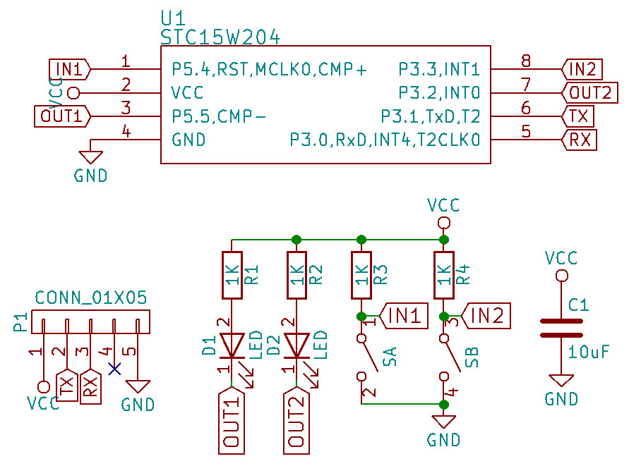
Footprint腳位如下所示：
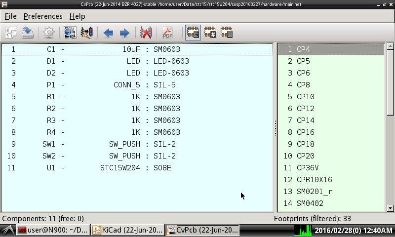
PCB佈線如下所示：
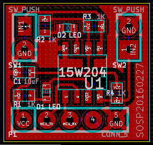
完成後的PCB實體(單面板 1.5公分 x 1.6公分)
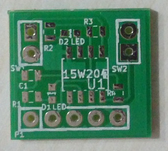
背面
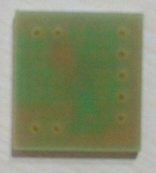
焊接完成，不過，司徒沒有買到3x4x2的按鍵，因此，只好使用SIP-3
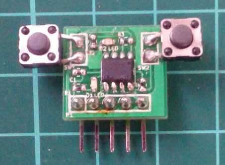
背面
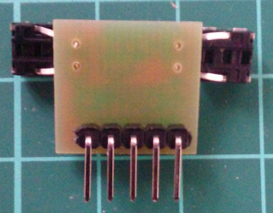
大小比例
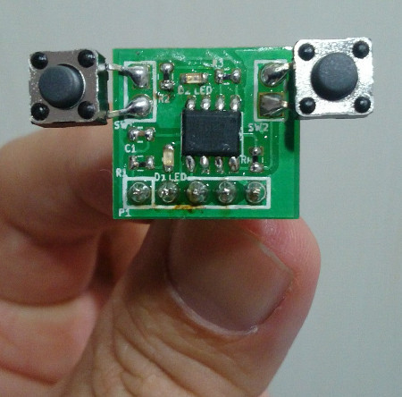
接上N900的模樣(原本90度的排針太短，只好改成180度排針)
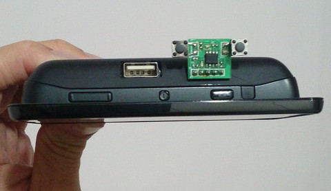
背面
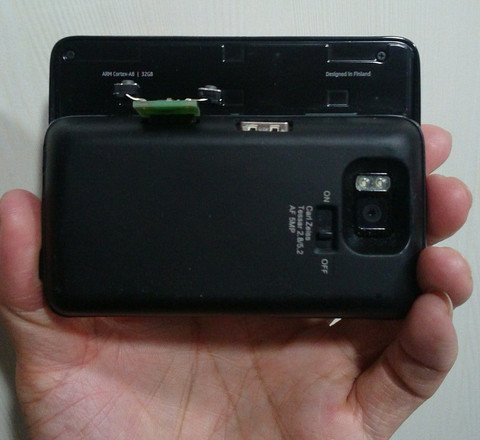
上邊
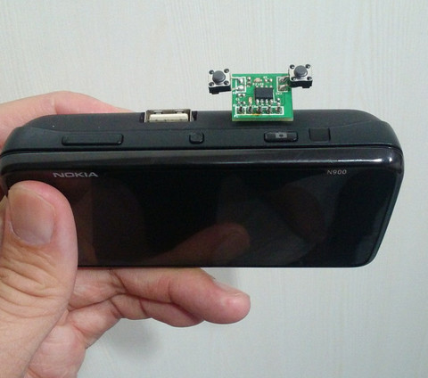
側邊
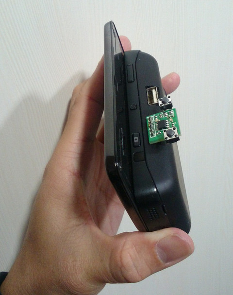
最後，司徒終於在網路上購買到3x4x2的按鍵，最終的樣子如下：
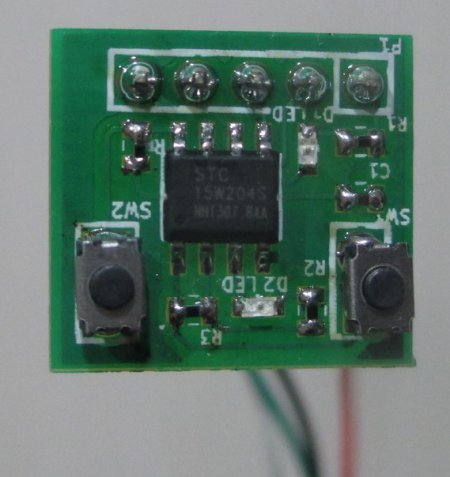